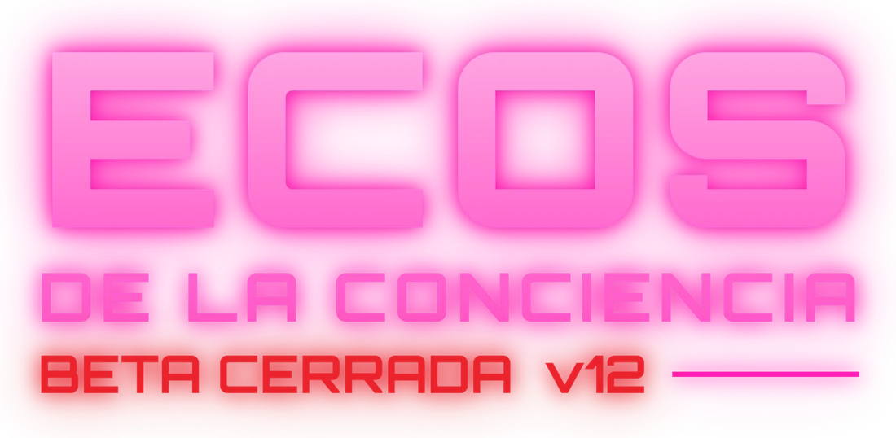

Se pone al día
Compara tu modpack con el de Cha y baja solo lo que cambió: mods, configuración, texturas y misiones.

Modpack privado · Minecraft 1.20.1 · Forge
Ya no hay zips. Con Prism Launcher, cada vez que abres el juego ECOS se pone al día: baja lo nuevo, quita lo que ya no va y aplica los ajustes que importan.
Una sola vez · 5 minutos
Tu progreso vive en el servidor: no pierdes nada al cambiarte. La primera vez baja todo el modpack (más o menos 1 GB); después, solo lo que cambie.
Es gratis y abre Minecraft como CurseForge, pero deja que el modpack se actualice solo.
prismlauncher.org/download → ábrelo e inicia sesión con tu cuenta de Microsoft (la de Minecraft).
En Prism: Add Instance → Import, pega este link y dale OK.
https://github.com/Ch7a-code/ecos-modpack/releases/latest/download/ECOS-Prism.zip
Antes de abrir sale una ventanita que baja el modpack. La primera vez tarda unos minutos; las siguientes, segundos.
Ya en el juego, entra al servidor como siempre.
Qué hace
Todo esto pasa solo, antes de que arranque el juego. Tú solo abres y juegas.
Compara tu modpack con el de Cha y baja solo lo que cambió: mods, configuración, texturas y misiones.
Si un mod sale del modpack, también sale de tu PC. Nada de versiones mezcladas.
Aplica solo los que arreglan fallas (las nubes de Distant Horizons y las sombras que cambiaban el cielo de golpe). Lo demás de tu configuración se respeta.
Viene con la configuración mínima que corre en la PC más modesta del grupo. Si la tuya aguanta, súbele: hay 6 shaders más y texturas con relieve.
El juego abre igual con la última versión que tengas. La próxima vez que abras se pone al día.
Cuando hay cambios, Zykna te los explica en una ventana corta al entrar al servidor. Dale «Entendido» y listo.
Ya adentro
Escríbelo en el chat (o usa la tecla). Zykna te guía desde ahí.
Dudas
No. Tu personaje, tus cosas, la colonia y las Eras viven en el servidor. Solo cambias el programa con el que abres el juego.
Puedes entrar, pero no se actualiza solo: te iría quedando una versión vieja y el servidor te avisará en rojo cada vez que entres.
El modpack viene con 10 GB. Si tu PC tiene 16 GB o menos y se traba, bájala a 8 GB en Prism: clic derecho a ECOS → Edit → Settings → Java.
Por ahora está armado para Windows: el paso que actualiza antes de abrir usa PowerShell. Si usas otro sistema, avísale a Cha.
Cierra y vuelve a abrir desde Prism: casi siempre se arregla con la actualización. Si sigue, entra al servidor y escribe reporte con lo que pasa.
En el juego: Opciones → Calidad de video → Shaders. El de default es Complementary con Euphoria, ajustado para que corra en cualquier PC; los demás son opcionales.
Hazlo hoy: el servidor ya está en la versión nueva y algunas cosas (como tus FPS en los reportes y los ajustes que arreglan el cielo) solo llegan con Prism.